Greek Tradition. Modern Coffee.
At Mati, family is at the heart of everything we do. As a proud, family-run establishment, our vision was born from a deep-rooted passion for our heritage and a desire to bring the legendary warmth of Greek hospitality—known as philoxenia—into a truly modern coffee and culinary experience.
We have carefully curated a space where contemporary elegance meets traditional Mediterranean charm right here in Hitchin. Whether you are pausing for a meticulously crafted artisanal coffee or savoring our authentic food, you are welcomed not just as a customer, but as an honored guest in our home.